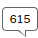

Space Ripples Reveal Big Bang’s Smoking Gun

Alan Guth was one of the first physicists to hypothesize the existence of inflation, which explains how the universe expanded so uniformly and so quickly in the instant after the Big Bang 13.8 billion years ago.Credit
Rick Friedman for The New York Times
March 17, 2014
